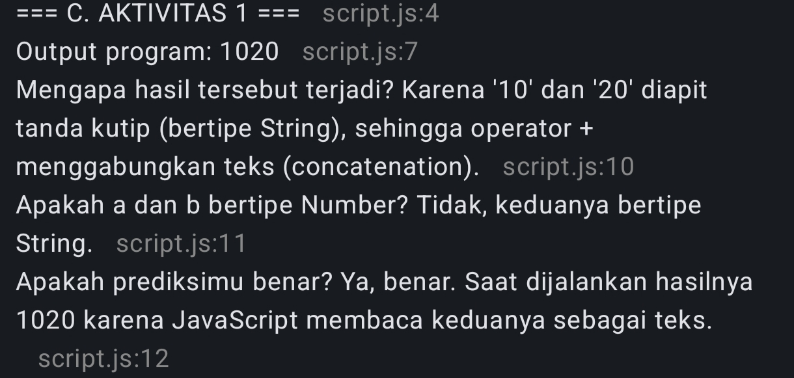
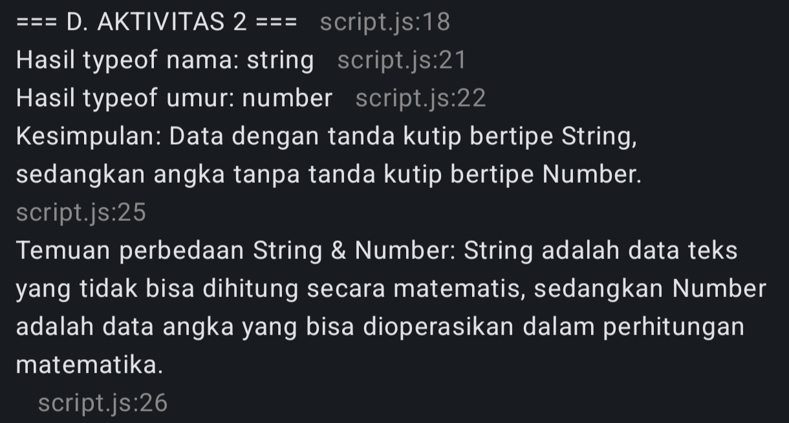
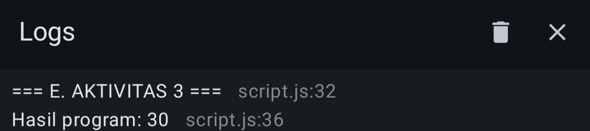
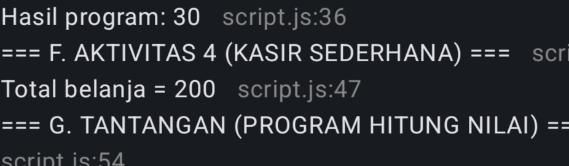
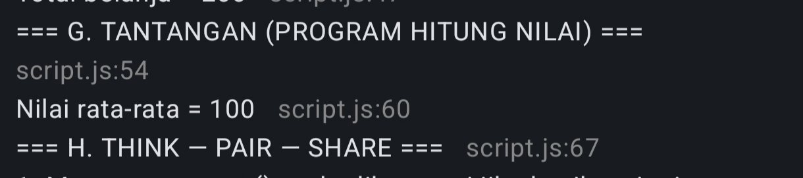
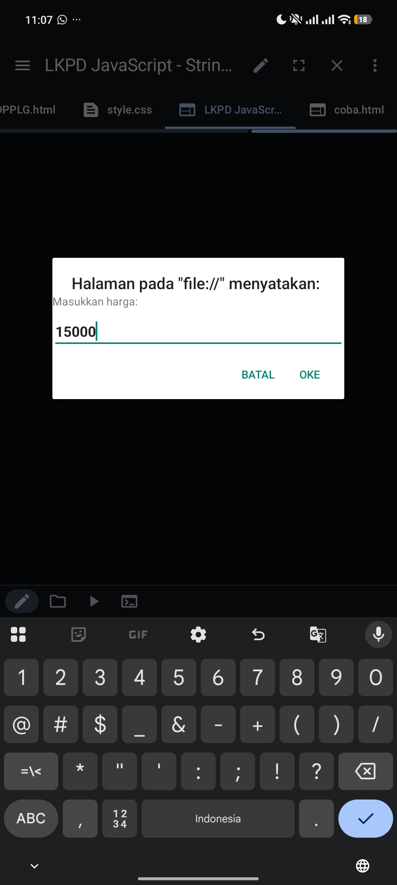
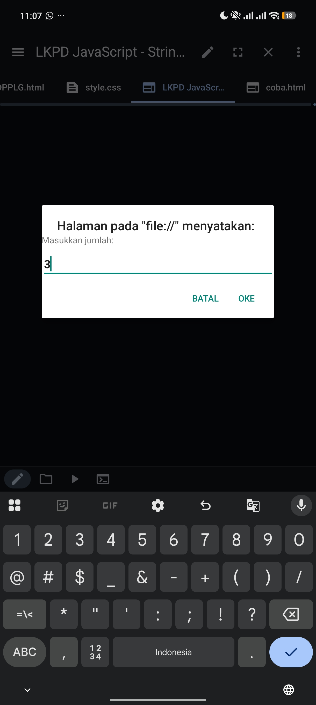
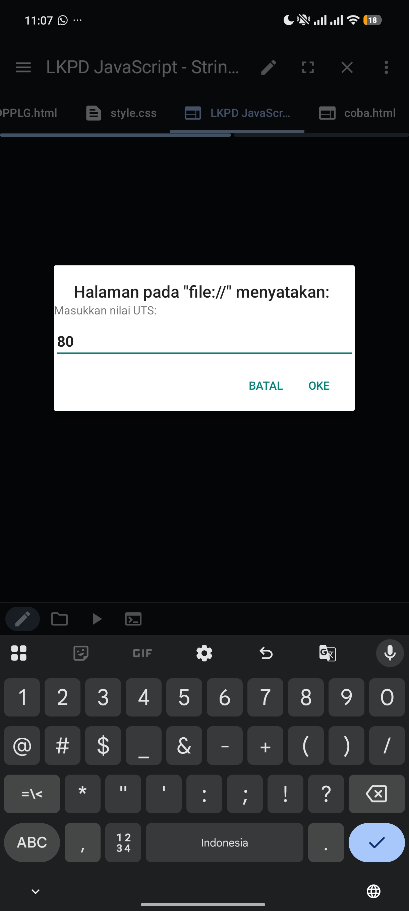
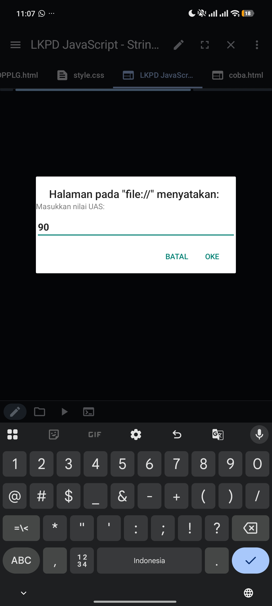

| Satuan Pendidikan | : SMKN 1 GARUT | Nama | : Ahmad Fauzi |
| Mata Pelajaran | : Dasar-Dasar PPLG | Kelas / No. Absen | : X PPLG 1 / 05 |
| Fase / Alokasi Waktu | : E / 2 x 45 menit | Tanggal | : 19 Oktober 2026 |
Setelah menyelesaikan LKPD ini, peserta didik mampu:
prompt() menghasilkan String.Number() dan String().Prediksi hasil sebelum menjalankan kode. Jalankan kode dan amati. Simpan file sebagai lkpd_string_number_nama.js.
let a = "10";
let b =
console.log(a + b);
let nama = "Asep";
let umur = 16;
console.log(typeof nama);
console.log(typeof umur);
typeofnamaumurPerbaiki program agar menghasilkan 30. Gunakan Number():
let a = "10";
let b = "20";
let hasil = Number(a) + Number(b);
console.log(hasil);
Catat hasil program: Program mengeluarkan nilai 30 pada console.Buat program yang meminta harga barang dan jumlah barang melalui prompt(), mengubah keduanya menjadi Number, lalu menghitung total harga.
let harga = Number(prompt("Masukkan harga: "));
let jumlah = Number(prompt("Masukkan jumlah: "));
let total = harga * jumlah;
console.log("Total belanja = " + total);
Buat program dengan input nilai tugas, UTS, dan UAS. Konversikan semua input menggunakan Number(), lalu hitung rata-rata dengan rumus (tugas + UTS + UAS) / 3.
Algoritma saya:

| Pertanyaan | Jawaban |
|---|---|
Mengapa prompt() perlu dikonversi jika hasilnya ingin dihitung? |
Karena fungsi prompt() selalu mengembalikan data bernilai String. Jika tidak dikonversi, operasi penambahan (+) akan menggabungkan teks, bukan menjumlahkan angka. |
Apa perbedaan "10" dengan 10? |
"10" adalah String (teks), sedangkan 10 adalah Number (nilai numerik/angka). |
Apa yang terjadi jika lupa Number()? |
Hasil perhitungan penambahan akan menghasilkan gabungan teks (misal "10" + "20" = "1020"). |
Pair: Hasil jawaban sama dengan teman sekelompok karena logika konversi tipe data JavaScript bersifat pasti.
Share: Penting untuk selalu memeriksa tipe data input sebelum melakukan perhitungan aritmatika di JavaScript.
3 hal yang saya pahami:
2 hal yang masih membingungkan:
1 hal yang ingin saya coba pada program berikutnya:
| Pernyataan | Ya | Belum |
|---|---|---|
| Saya dapat membedakan String dan Number. | ✓ | |
Saya memahami prompt() menghasilkan String. |
✓ | |
Saya dapat menggunakan Number(). |
✓ | |
Saya dapat menggunakan String(). |
✓ | |
| Saya dapat menemukan kesalahan tipe data. | ✓ | |
| Saya dapat membuat program input dan hitung sederhana. | ✓ |
| Aspek | 4 - Sangat Baik | 3 - Baik | 2 - Cukup | 1 - Perlu Bimbingan |
|---|---|---|---|---|
| Tipe Data | Membedakan String/Number dengan tepat dan jelas. | Menjelaskan perbedaan dengan sedikit bantuan. | Masih ada kekeliruan dalam membedakan. | Belum memahami tipe data. |
| Konversi | Tepat dan mandiri dalam konversi. | Benar dengan sedikit arahan. | Ada beberapa kesalahan. | Belum mampu melakukan konversi. |
| Program | Berjalan benar dan rapi. | Sedikit kesalahan tetapi berjalan. | Berjalan sebagian. | Belum berjalan. |
| Pemecahan Masalah | Menemukan dan memperbaiki kesalahan secara mandiri. | Memperbaiki dengan sedikit bantuan. | Membutuhkan banyak bantuan. | Belum mampu memecahkan masalah. |
Sangat baik! Pemahaman tentang konversi data dan manipulasi tipe data dalam JavaScript sudah kuat. Pertahankan presisi penulisan kode.



